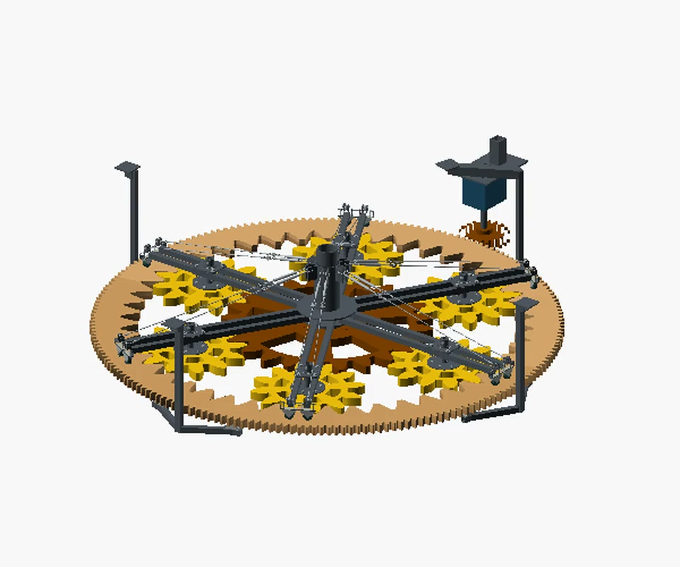
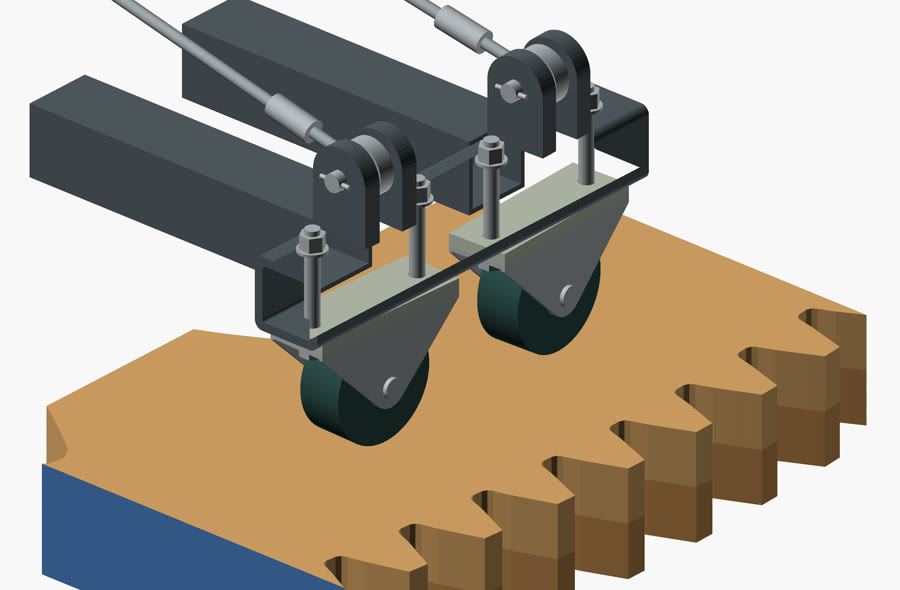

Capstone notebook / Spring to fall 2026
Kinetic Wilbur.
The question was how to turn a visible planetary gear mechanism into a ceiling-hung kinetic sculpture. A year-long team capstone, with documented spring prototypes and a motorized installation design under revision in November.
Take it apart.
The center is the reference, the planets sit in the carrier, and the outside ring is both a gear and a surface for wheels. Scrub the view to follow the carrier and its cable stays lifting, then see the two plywood ring layers separate. The planet gears and fixed supports stay put.

My part of the work.
I designed and iterated the assembly in OpenSCAD, my preferred CAD tool. That included the carrier and how the wheel mounts, ring, and cable stays fit together. I also worked through materials and parts choices and updated planning documents as the geometry changed.
I also helped prepare the ring profiles for CNC review and compared carrier concepts with and without cable stays. The team and sponsor contributed analysis, prototype fabrication and design review.
How the design changed.
- Spring prototypes. Early models explored planetary gears with a lower base and a wave feature. The hanging revision removed that lower structure and vertical motion, leaving the gears easier to see from below.
- Motorized installation. The larger design had to put the drive, carrier and supports into the same physical space. That meant revisiting where the ring is guided and how the wheel supports attach.
- November 2. I worked on the widened-ring revision. It keeps the inside gear profile and makes a broader rolling surface. The team had heard noise in ball-transfer sample tests. In this revision I modeled direct-mounted fixed wheels instead, and the larger ring moved the drive and supports outward.
What it’s made of, on paper.
The November proposal uses two plywood layers for the outer ring, steel tube for the carrier and supports, and catalog fixed casters as the wheel candidates. Staggering the ring’s seams allows it to be modeled as four stock-sized halves without one seam passing through both layers.

What I would check next
Measure the actual caster mount, test the sample on the real stock, confirm clearance through rotation, then review the glue-up and welded connections before releasing fabrication details.
Where it stands.
The team CNC-cut a planet gear and welded an early sleeve and flange. The complete November assembly is still a proposal. I can show the model and its geometry checks; full loaded rotation, material behavior and the installation are still to be verified.